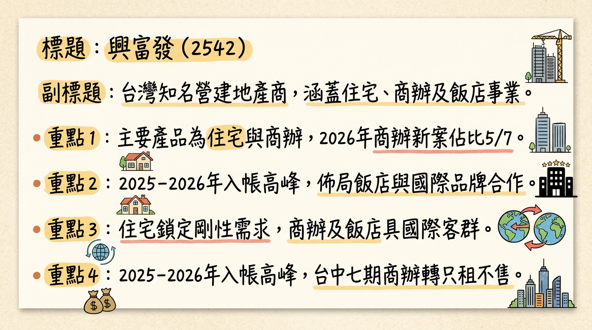
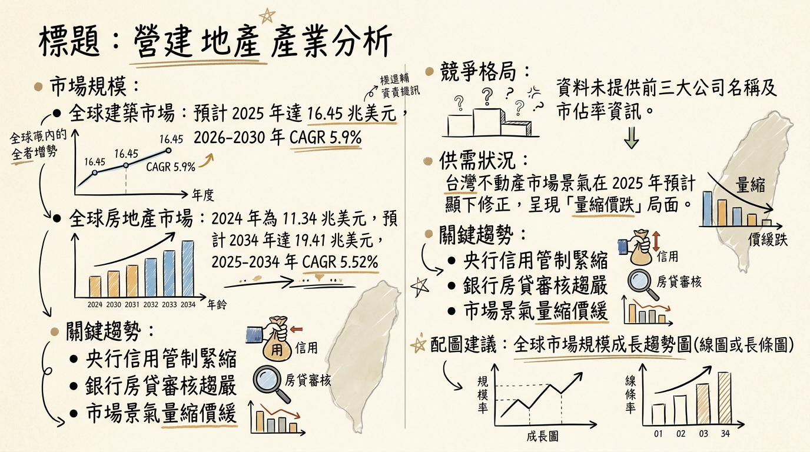
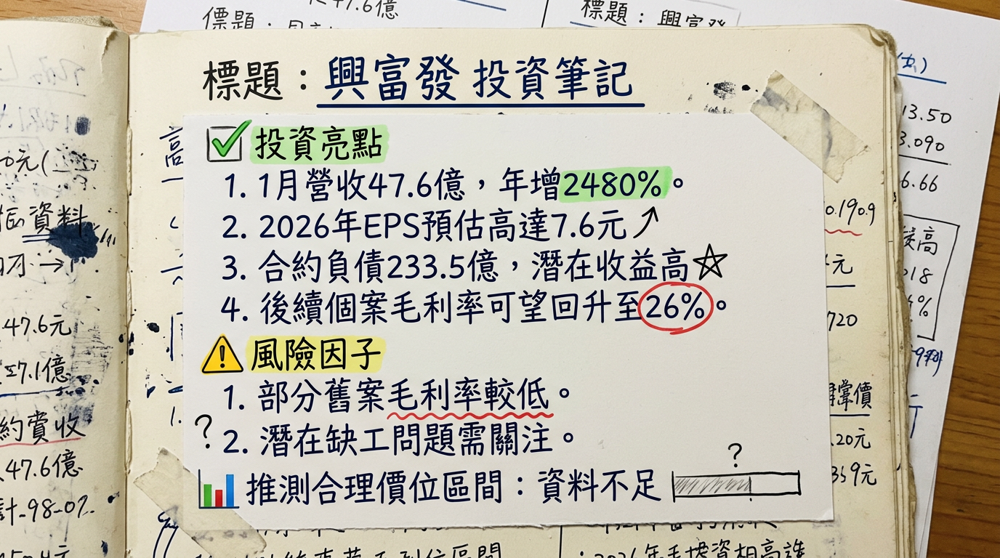

興富發（2542）受惠於台灣房市剛性需求回溫及新青安貸款政策支撐，正進入高達 4,957.52 億元在手案量的建案完工入帳高峰期，預計 2026 年至 2028 年每年將有逾 700 億元的完工量。公司策略性佈局商辦與飯店事業，輔以「只租不售」創造穩定現金流，營運展望從谷底翻揚，毛利率預期回穩至 26% 以上，成長動能強勁。
興富發建設主要從事委託營造廠商興建商業大樓及國民住宅的租賃與銷售業務，並提供室內裝潢設計施工、建材及裝潢材料買賣與進出口等服務。近年積極拓展飯店事業，與洲際（IHG）、萬豪（Marriott）、凱悅（Hyatt）等國際酒店集團合作開發，多元化收益來源。
核心產品線與未來佈局：| 產品類型 | 主要客群/策略 | 2026年推案重心 |
|---|---|---|
| 住宅 | 鎖定小坪數 2 房的剛性需求市場，受惠「新青年安心成家貸款」。 | 聚焦優質學區、交通便利、機能成熟區 |
| 商辦 | 看好微型商辦與企業總部需求，部分大案改為「只租不售」。 | 5 案為商辦產品，總銷 1,155.9 億元 |
| 飯店 | 與國際品牌合作，提升資產價值及多元收益。 | 多個國際品牌飯店將陸續開幕 |
| 地區 | 總銷案量 (億元) | 佔比 (%) | 備註 |
|---|---|---|---|
| 台中地區 | 1,810.30 | 37% | 核心市場，部分商辦案如惠國88、90等 (總銷700億元) 改為只租不售 |
| 台南及高雄 | 1,536.83 | 31% | 近期營收貢獻主要地區 (2026年1月營收) |
| 大台北地區 | 1,041.08 | 21% | |
| 桃竹地區 | 545.28 | 11% | |
| 總計 | 4,957.52 | 100% |
| 月份 | 金額 (億元) | 月增率 MoM (%) | 年增率 YoY (%) | 備註 |
|---|---|---|---|---|
| 2026年1月 | 47.61 | -40.2 | 2480.63 | 創歷史同期新高，認列「福山案」、「VVS1」 |
| 2025年12月 | 79.61 | 78.5 | 233.76 | 近 27 個月新高，認列「福山案」、「VVS1」 |
| 2025年11月 | 44.61 | 11.3 | 43.32 | |
| 2025年10月 | 40.07 | 33.3 | -36.46 | |
| 2025年9月 | 30.05 | -21.4 | -1.5 | |
| 2025年8月 | 38.22 | 135.8 | 8.44 |
| 指標 | 2025年Q3 | 備註 |
|---|---|---|
| 季營收 | 新台幣 84.5 億元 | |
| 歸屬母公司稅後淨利 | 新台幣 15.2 億元 | 年減 15.03% |
| EPS | 新台幣 0.72 元 | 季增 196%，年減 14% |
| 毛利率 | 27.25% (2025Q3實際) | 法說會指引後續將回歸 26%以上正常水準 |
| 營業利益率 | 18.66% (2025Q3實際) | |
| 稅後淨利率 | 16.63% (2025Q3實際) | |
| 合約負債 (流動) | 新台幣 233.51 億元 | 截至 2025年9月底，較去年底成長 20.9% |
| 已簽訂銷售合約總價 | 新台幣 2,132.97 億元 | 顯示大量營收已售出，待完工過戶認列 |
| 年度 | 營收 (億元) | 稅後純益 (億元) | EPS (元) | 備註 |
|---|---|---|---|---|
| 2024 (實際) | 369.28 | 62.87 | 3.13 | 營收年衰退 16.2%，稅後純益年增 157.96% |
| 2025 (預估) | 308.01 | 52.43 (平均) | 2.00-4.03 | 法人平均預估區間，統一證券預估 2.42 元 |
* 2027 年：完工量 743.38 億元。
* 2028 年：完工量 749.86 億元。
* 公司表示未來七年（至 2032 年）每年皆備妥 百億元以上 的完工量，未來動能無虞。
| 券商名 | 目標價 (元) | 評等 | 日期 | 備註 |
|---|---|---|---|---|
| 統一證券 | 50 | 看多 | 2025年12月3日 | |
| 台新投顧 | 52 | 看多 | 2025年4月7日 | 另有 2024年11月25日報告亦為 52 元 |
| 綜合分析師平均 | 49.57 | 看多 | N/A | 預估高點 57.14 元，預估低點 42 元 |
| 陳重銘-不敗存股術APP法人系統 | N/A | N/A | 2025年11月12日 | 未提供目標價，僅有 EPS 預估 |
| 季度 | 毛利率 (%) | 營業利益率 (%) | 稅後淨利率 (%) |
|---|---|---|---|
| 2025年Q3 | 27.25 | 18.66 | 16.63 |
| 2025年Q2 | 20.37 | 7.22 | 7.98 |
| 2025年Q1 | 39.21 | -5.55 | -11.08 |
| 2024年Q4 | 35.82 | 27.62 | 24.81 |
| 2024年Q3 | 36.67 | 28.19 | 22.8 |
| 2024年Q2 | 34.15 | 23.8 | 21.08 |
| 2024年Q1 | 32.89 | 18.9 | 16.68 |
| 2024年全年 | 35.17 | 25.5 | 22.13 |
2024 年受惠於「站前新鋭」、「文心愛鋭」等案完工入帳，全年稅後純益達 62.87 億元，EPS 3.13 元，毛利率表現良好。然而 2025 年第一季因建案交屋進度遞延導致營收與獲利顯著下滑，毛利率雖高但營業利益率及稅後淨利率轉負。2025 年第二季獲利谷底，毛利率降至 20.37%。第三季毛利率回升至 27.25%，顯示獲利能力開始好轉。管理層預期後續入帳個案毛利率將回穩至 26% 以上，符合公司長期平均約 35% 的水準，顯示營收結構將回歸健康。
截至 2025 年 9 月底，興富發的合約負債 (流動) 已攀升至 233.51 億元，較去年底成長 20.9%。已簽訂銷售合約總價高達 2,132.97 億元。這表明大量建案已預售，存貨並非異常堆積，而是已售出待完工交屋認列的營收。這也為未來營收提供了高度的能見度與保障。
未找到 2024-2026 年具體資本支出金額數據。然而，公司在 2025 年法說會中提及，由於土地價格居高不下且集團庫存土地量已達 千億元，將暫時維持「暫停購置素地」原則，並優先考慮都更、危老、合建等開發案，顯示資本支出策略轉向更具效益及風險控制的模式。預計 2025 年全台新案完工量高達 900 億元，2026-2028 年每年完工量均逾 700 億元，這代表將有大量的建案投入市場。
* 2025 年 (預計發放)：2025 年 9 月 25 日發放現金股利 2 元、股票股利 0.5 元。
* 回顧 2023 年股利政策：每股現金股利 0.5 元，股票股利 1 元。
| 公司名稱 | 備註 |
|---|---|
| China State Construction Engineering Corporation (CSCEC) | 中國建築工程總公司 |
| Bechtel | 美國最大的工程建設公司之一 |
| Vinci | 法國跨國特許經營和建築公司 |
| Larsen & Toubro (L&T) | 印度跨國企業集團，業務涵蓋工程、建築等 |
| Skanska | 瑞典跨國建築和開發公司 |
儘管缺乏興富發與其他台灣同業在 2025-2026 年的直接營收規模、毛利率、EPS 比較表格，但從產業趨勢來看，興富發以其龐大的在手案量、高週轉策略以及多元化產品佈局，在台灣建設業中佔據領先地位。其毛利率在經歷谷底後，預期能回到 26% 以上的行業較高水準，優於台灣營造業平均 7% 以上的毛利率，展現其營運效益。
* 飯店事業拓展：觀光復甦帶動飯店業務成長，多元化收益。
* 資產活化與穩健現金流：台中七期商辦「只租不售」策略，將創造長期穩定金流。
* 央行信用管制與高利率：持續的信用管制及高利率環境，推升房貸成本，影響購屋者購買力。
* 營建成本上漲與缺工：建築原材料與裝修成本仍處高位，缺工問題可能影響建案進度及利潤空間。
| 時間 | 成長動能項目 | 具體內容 |
|---|---|---|
| 2025年10月 | 需求回溫 | 房市買氣已見小幅回暖跡象，剛性買盤陸續歸隊，受惠於國內科技業與 AI 產業發展帶動的總體經濟成長。 |
| 2025年12月 | 策略調整 | 法說會提及「新青年安心成家貸款」政策支撐下，「需要型」剛性需求產品銷售穩健回溫。 台中七期總銷 700 億元 商辦案（惠國88、90等）改為「只租不售」策略，創造穩定長期現金流。購地策略調整為積極布局都更、危老、合建案，降低土地取得成本並分散風險。 |
| 2026年 | 產能擴充 | 將迎來完工交屋高峰，預計完工量高達 792.25 億元。預計推出 7 大新案，其中 5 案為商辦，合計總銷達 1,155.9 億元，分佈於台北、桃園、台中、高雄。 |
| 2026年起 | 新市場/客戶 | 看好台商回流及企業總部需求，大幅提高商辦產品比例。飯店事業持續拓展，新北金山洲際酒店已開幕，台南安平雅樂軒酒店將加入營運，未來還有台中七期Andaz安達仕酒店、高雄Hyatt Regency凱悅酒店等國際品牌飯店將陸續開幕，多元化收益來源。住宅部分鎖定剛性需求的小坪數2房產品。 |
| 2027年 | 產能持續 | 預計完工量為 743.38 億元。 |
| 2028年 | 產能持續 | 預計完工量為 749.86 億元。 |
| 至2032年 | 長期動能 | 公司表示未來七年（至 2032 年）每年皆備妥 百億元以上 的完工量，提供長期的營收基礎。 |
綜合以上深度分析，興富發（2542）在 2026 年至 2028 年將迎來前所未有的建案完工入帳高峰期，營運谷底已過，獲利能力將顯著回升。
此區間主要考量法人機構平均目標價（約 49.57 元，高點 57.14 元）以及 2026 年預期 EPS 達 7.6-8 元所對應的合理本益比區間 (約 6.8x-7.2x)。隨著建案持續入帳及市場對其獲利展望的信心增強，興富發具備向上重估的空間。
本報告由 AI 自動產生，資料來源為公開網路資訊，僅供參考，不構成投資建議。產生時間：2026-03-06 15:07


